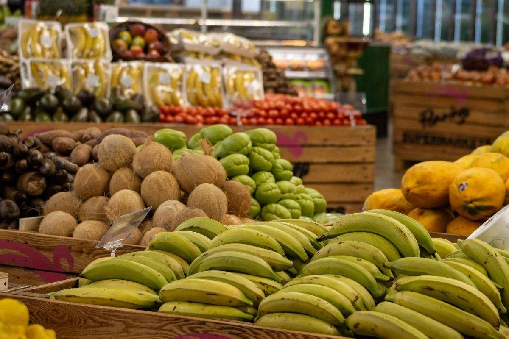
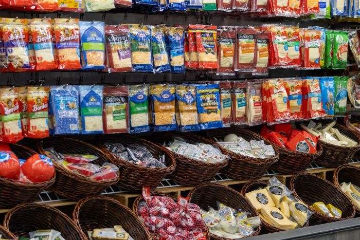
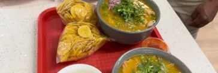
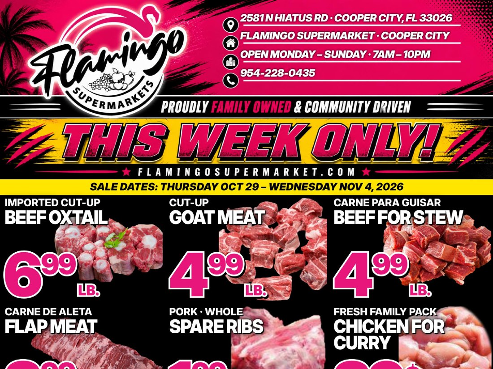

Fresh produceFrutas y verduras
Plantains, yuca, papaya, mangoes and the greens you cook with, picked daily.Plátano, yuca, papaya, mango y las hojas con las que cocinas, todos los días.

Products from 17+ countries, a kosher section, a full butcher counter and six restaurants open daily under one roof.Productos de más de 17 países, sección kosher, carnicería completa y seis restaurantes abiertos a diario bajo un mismo techo.
From siblings to cousins, there's someone from the family behind every register, shelf and counter.De hermanos a primos, hay alguien de la familia detrás de cada caja, estante y mostrador.
Plantains, yuca, papaya, mangoes and the greens you cook with, picked daily.Plátano, yuca, papaya, mango y las hojas con las que cocinas, todos los días.
Full-service butcher counter and a daily seafood case. Cut the way you ask.Carnicería con servicio y pescadería diaria. Cortado como lo pidas.

Ecuador, Colombia, Venezuela, Peru, Argentina, Mexico, the Caribbean and the Middle East.Ecuador, Colombia, Venezuela, Perú, Argentina, México, el Caribe y el Medio Oriente.
A dedicated section, growing with what the neighborhood asks for.Una sección dedicada, que crece con lo que pide el vecindario.

Pan de yuca, humitas, tres leches, cakes to order and fresh bread every morning.Pan de yuca, humitas, tres leches, tortas por encargo y pan fresco cada mañana.

Sugar cane juice pressed to order, smoothies, batidos and Ecuadorian coffee.Jugo de caña al momento, smoothies, batidos y café ecuatoriano.

The Ecuadorian kitchen. Encebollado, seco, hornado and breakfast from 7 AM.La cocina ecuatoriana. Encebollado, seco, hornado y desayuno desde las 7.

Tacos, burritos and quesadillas made to order at the stand.Tacos, burritos y quesadillas hechos al momento en el puesto.
Sit down or take it to go. Same hours as the store, 7 AM to 10 PM every day.Para comer aquí o para llevar. Mismo horario que la tienda, 7 AM a 10 PM todos los días.
From 7 AMDesde las 7Ecuadorian kitchen with a menu that changes daily: encebollado, seco de chivo, hornado con mote, ceviche de camarón, guatita, caldo de pata.Cocina ecuatoriana con menú que cambia a diario: encebollado, seco de chivo, hornado con mote, ceviche de camarón, guatita, caldo de pata.
Made to orderAl momentoAl pastor, carne asada, birria, burritos and quesadillas, made to order at the stand.Al pastor, carne asada, birria, burritos y quesadillas, hechos al momento en el puesto.
Pan de yuca, humitas, empanadas, tres leches, guagua de pan in season, and cakes to order.Pan de yuca, humitas, empanadas, tres leches, guagua de pan en temporada y tortas por encargo.
Fresh-pressed sugar cane, tropical smoothies, batidos and coffee, made while you shop.Caña recién exprimida, smoothies tropicales, batidos y café, mientras haces las compras.
 Mon–Fri 4–9 PM
Mon–Fri 4–9 PMThe evening grill: pinchos, carne asada with menestra, salchipapa, papi pollo, papi hornado and chaulafán.La parrilla de la tarde: pinchos, carne asada con menestra, salchipapa, papi pollo, papi hornado y chaulafán.

8–11 AM · $10.99Bolón, bistec and huevo frito with a free café americano. Grab it on the way in.Bolón, bistec y huevo frito con café americano gratis. Llévalo al entrar.
Oxtail, snapper, goat meat and more this week. Plus 330+ products you can order online for pickup at Embassy Lakes or delivery in Cooper City.El folleto semanal, más de 330 productos que puedes pedir en línea para recoger en Embassy Lakes o entrega en Cooper City.

Valid Oct 22–28Válido 22–28 octLive singers throughout the store while you eat and shop, every Saturday and Sunday.Cantantes en vivo por toda la tienda mientras comes y haces las compras, cada sábado y domingo.
A new country each time: sample the dishes, hear the music, take a trip without leaving Cooper City.Un país nuevo cada vez: prueba los platos, escucha la música, viaja sin salir de Cooper City.
Grilled favorites and free samples at the front entrance.Favoritos a la parrilla y muestras gratis en la entrada.
Opening in the back, next to Taco Way: a full bar and grill with table seating. Sit down for lunch or dinner from any of our kitchens, order a drink and catch the game on the big screens.Abre al fondo, junto a Taco Way: bar y parrilla con mesas. Siéntate a almorzar o cenar de cualquiera de nuestras cocinas, pide algo de tomar y mira el partido en las pantallas.

Trays from La Casita, Taco Way, the Picantería and Panadería Ambato, sized for any crowd. Call and we'll put it together.Bandejas de La Casita, Taco Way, la Picantería y Panadería Ambato, para cualquier cantidad de gente. Llámanos y lo armamos.
Full bar. Table seating. Lunch or dinner from any of our kitchens, a cold drink, and the game on the big screens.Bar completo. Mesas. Almuerzo o cena de cualquiera de nuestras cocinas, algo frío de tomar y el partido en las pantallas.
Follow for the opening dateSíguenos para la fecha de apertura“Flamingo Supermarket is a supermarket unlike any other!”Jessica · Google
“The BEST variety of herbal teas and infusions ever seen, condiments, frozen fish and seafood variety, wines, hot sauces and dressings.”Maria · Google Local Guide
“Excellent store. The store is immaculate. The food options are authentic Latina, American and Caribbean.”Adrienne · Google Local Guide
What began as a drive past an empty lot during the pandemic turned into a dream between two brothers, inspired by our family's grocery roots since 1973. We take pride in knowing your name, your favorite juice, and how you like your produce.Lo que empezó como un paseo frente a un lote vacío durante la pandemia se convirtió en el sueño de dos hermanos, inspirado en las raíces familiares en el negocio de abarrotes desde 1973. Nos enorgullece saber tu nombre, tu jugo favorito y cómo te gustan tus frutas y verduras.
More than groceries. An experience.Más que un supermercado. Una experiencia.